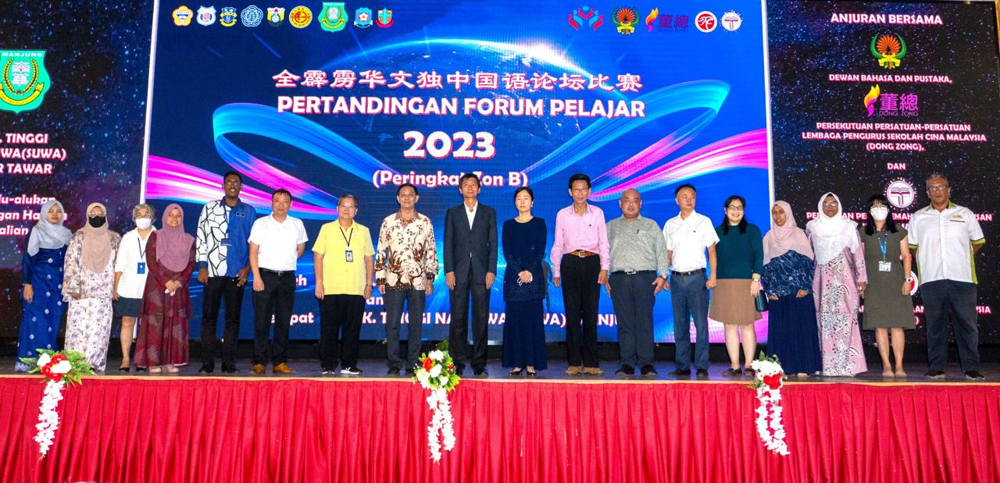
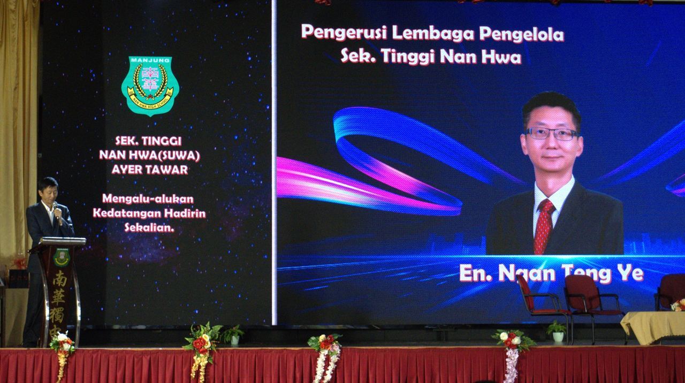
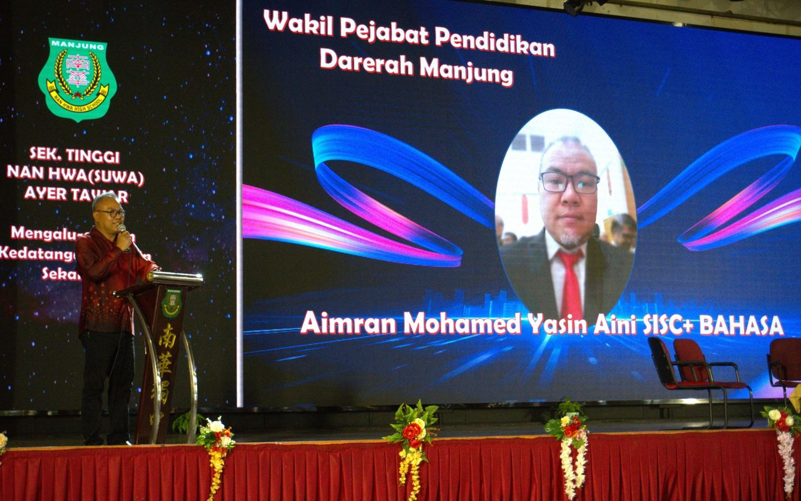
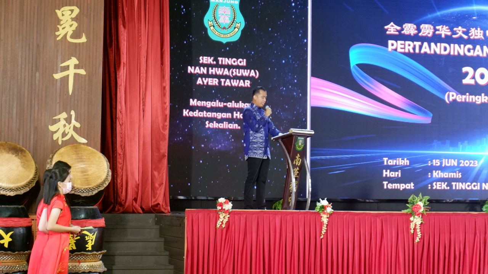
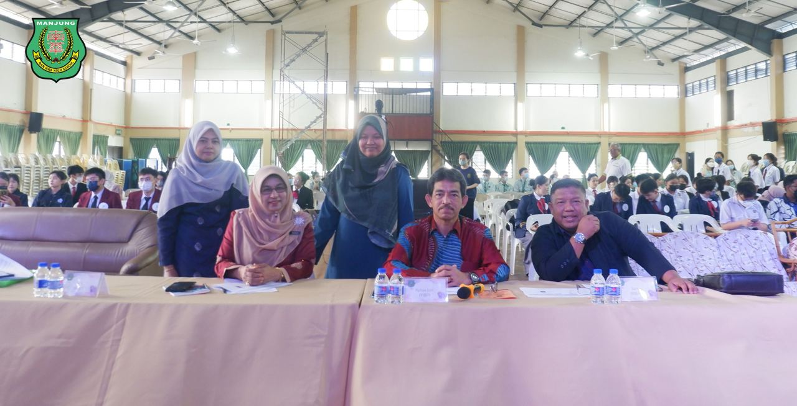
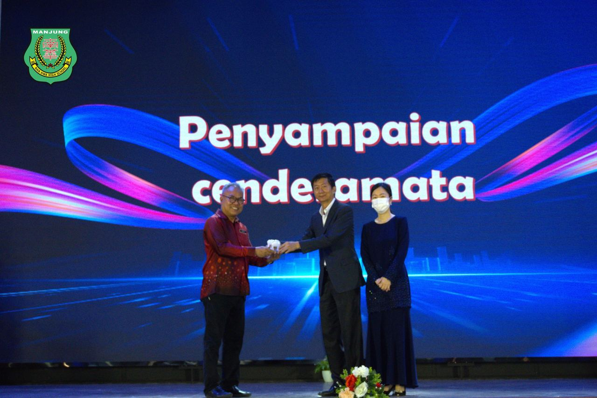
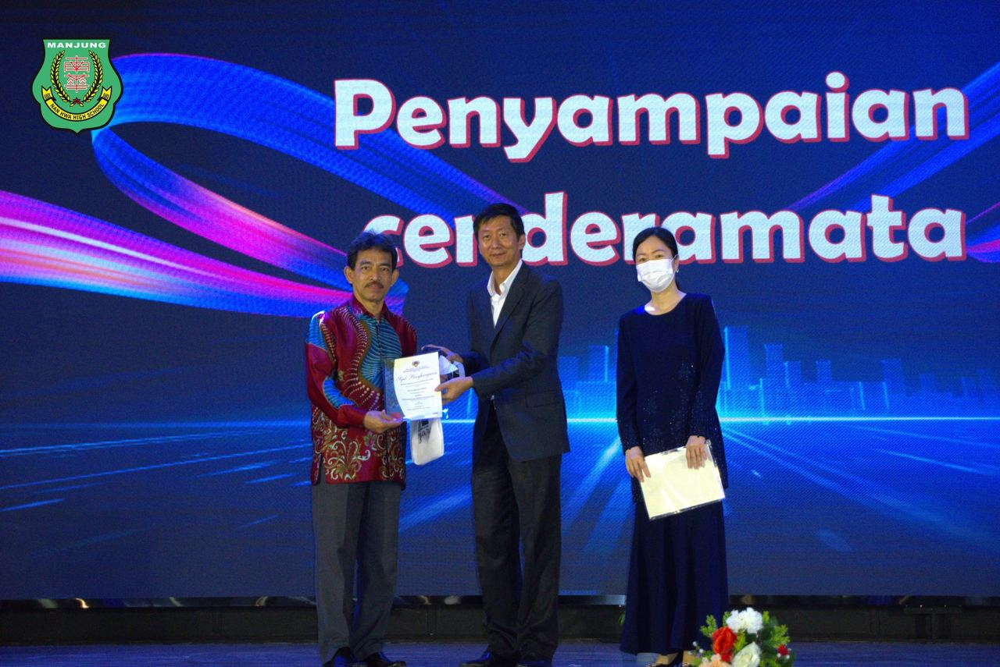
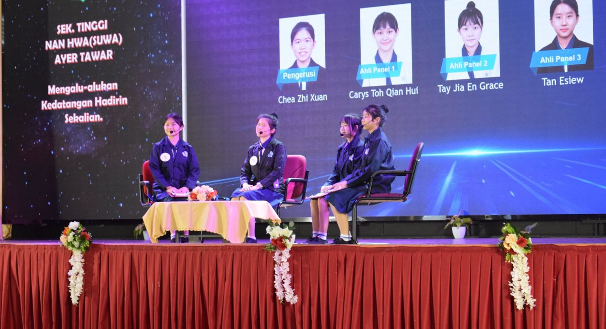

全霹雳独中国语论坛 培南出线征全国赛
全霹雳独中国语论坛 培南出线征全国赛
全霹雳华文独中国语论坛比赛今天在曼绒南华独中举行，怡保培南独中成功出线，将代表霹雳州出征全国赛争取更高荣誉。
培南独中林婉柔赢最佳论主持人，让培南成为双料得主。比赛的亚军和季军分别为怡保育才独中及怡保深斋独中；最佳论坛员是育才独中的甘蔚淇。
州内9所独中各派出每队3人的代表参赛，针对教育、环境、文化、政治、健康、农业、科学、文学、社会等时下的热门课题进行讨论。评审老师在赛后给予9所独中的评语非常高，认为独中国语程度相当好，尤其在文法、语音和台风上皆十分优秀，在相应的课题上具备批判性思维，提出各自的创见，显得训练有素、达到专业水准。
南华独中董事长在致开幕辞中提到，举办国语论坛的意义是希望能够促进独中学生能够更流畅地使用标准马来语。此外，希望此次比赛能够培养出在马来语语法、发音和风格方面有优异表现的学生领袖。
曼绒县教育局代表艾明然穆哈默官员致辞中表示，霹雳九独中向来积极于举办各项以马来文为媒介语的比赛，推广多语文化的活动，并表现非常优异。他强调，此类比赛可以训练学生的国语水平，应鼓励学生踊跃参与，并训练他们针对事实课题找出更贴题的见解。
出席开幕礼嘉宾包括有南华独中董事长颜登逸、曼绒县教育局官员艾明然穆哈默、各独中校长、霹雳董联会总务黄志伟、南华独中董事总务何添胜、董事吴明月。
全霹雳华文独中国语论坛比赛得奖名单：
冠军：怡保培南独中
亚军：怡保育才独中
季军：怡保深斋中学
最佳主持人奖：怡保培南独中林婉柔
最佳论坛员：怡保育才独中甘蔚淇
#霹雳九独中 #国语论坛 #Forum
#南华独中 #曼绒 #实兆远







